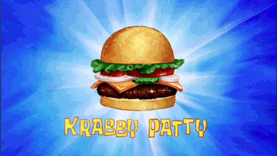

Krabby Patty

Ingredients
- Seaweed buns
- Imitation Crab Meat Patty
- Cheese
- Sea Ketchup
- Sea Mustard
- Sea Lettuce
- Sea Tomato
- Sea Pickles
- Sea Onion
- 2 teaspoons of chopped celery
- 2 teaspoons chooped onion
- 4-6 tablespoons vegetable oil
- 1 teaspoon thyme
- 2 eggs
- 1 Lb frozen imitation crab meat (defrosted and smashed in a food processor)
- 4 cups seasoned bread crumbs
- 1 tablespoon mustard dijon
- 1 tablespoon mayonnaise plus more for dipping sauce
- salt and pepper (to taste)
- Ketchup for dipping sauce
Directions
- Sauté the onions and celery in 1 tablespoon of vegetable oil. Add the thyme, lower the heat, and cook until the onions are translucent.
- In a large bowl combine the crabmeat, sautéed onions and celery, bread crumbs, Dijon mustard, mayonnaise, egg, salt and pepper to taste. Stir to combine.
- Shape into rounds by using a small ice cream scoop, then gently pat flat.
- Heat 3 tablespoons of vegetable oil in a large skillet. Working in batches (2 to 3 crab cakes at a time) place the crab cakes in a skillet and cook until golden brown, about 2 minutes per side. You may need to add more oil for the second and third batches.
- Preheat the oven to 400°F. Transfer the crab cakes to the baking pan and bake for 10 minutes. The crab cakes can be kept in a warm oven for approximately 30 minutes, or they may be reheated at serving time.
- Be sure to assemble the Krabby Patty in the proper order: Bun, Patty, Ketchup, Mustard, Pickles, Onion, Lettuce, Cheese, Tomato, and then Top Bun.
Source: aseatenontv.wordpress.com
Home